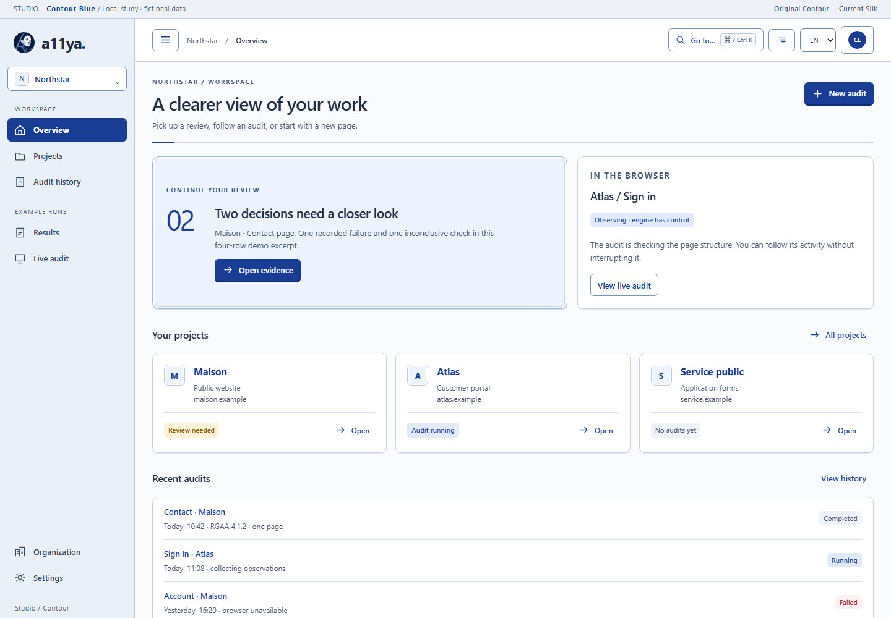
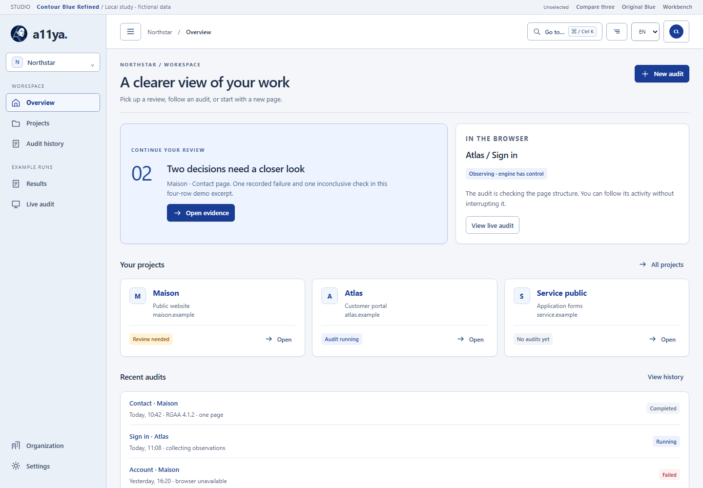
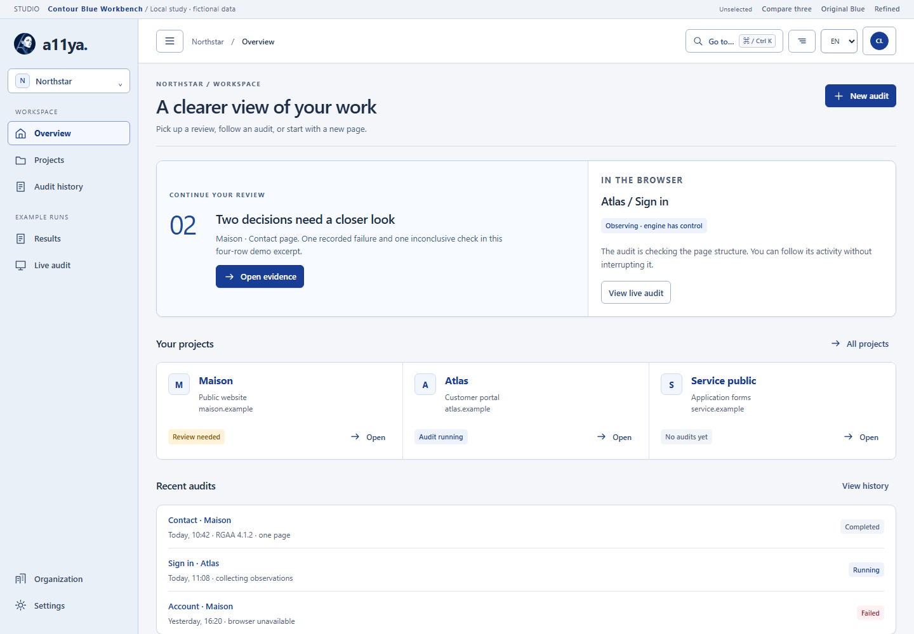

Original Blue
SelectedThe existing reference: compact navigation, shallow stacking, pale-blue review panel and the original a11ya identity.
- Baseline
- Existing geometry, controls and workflow.
The same application, with cleaner surfaces or more connected review work.

The existing reference: compact navigation, shallow stacking, pale-blue review panel and the original a11ya identity.

Cleaner white sheets on a subtle frame, one boundary per component, clearer blue actions and quieter hover and selection states.

Related sections share a frame. A common review toolbar connects the finding list to compact evidence, context and a next review step.
All three use the same demo content and inherited navigation. The two proposals keep Blue’s logo, palette and compact shell.
Try Results & evidence, select another finding, then open New audit.